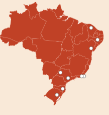
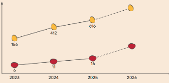
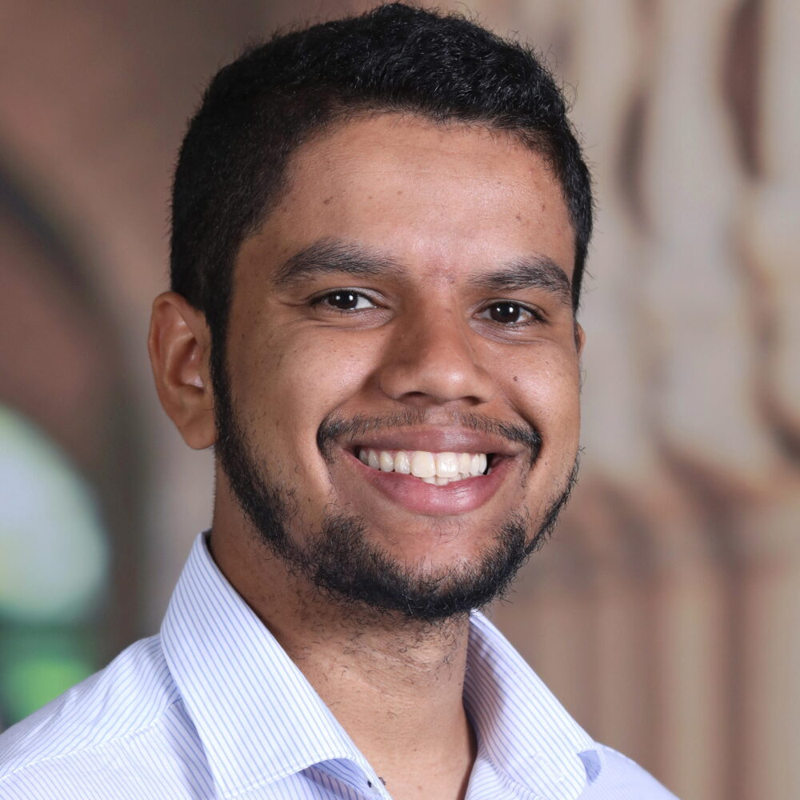
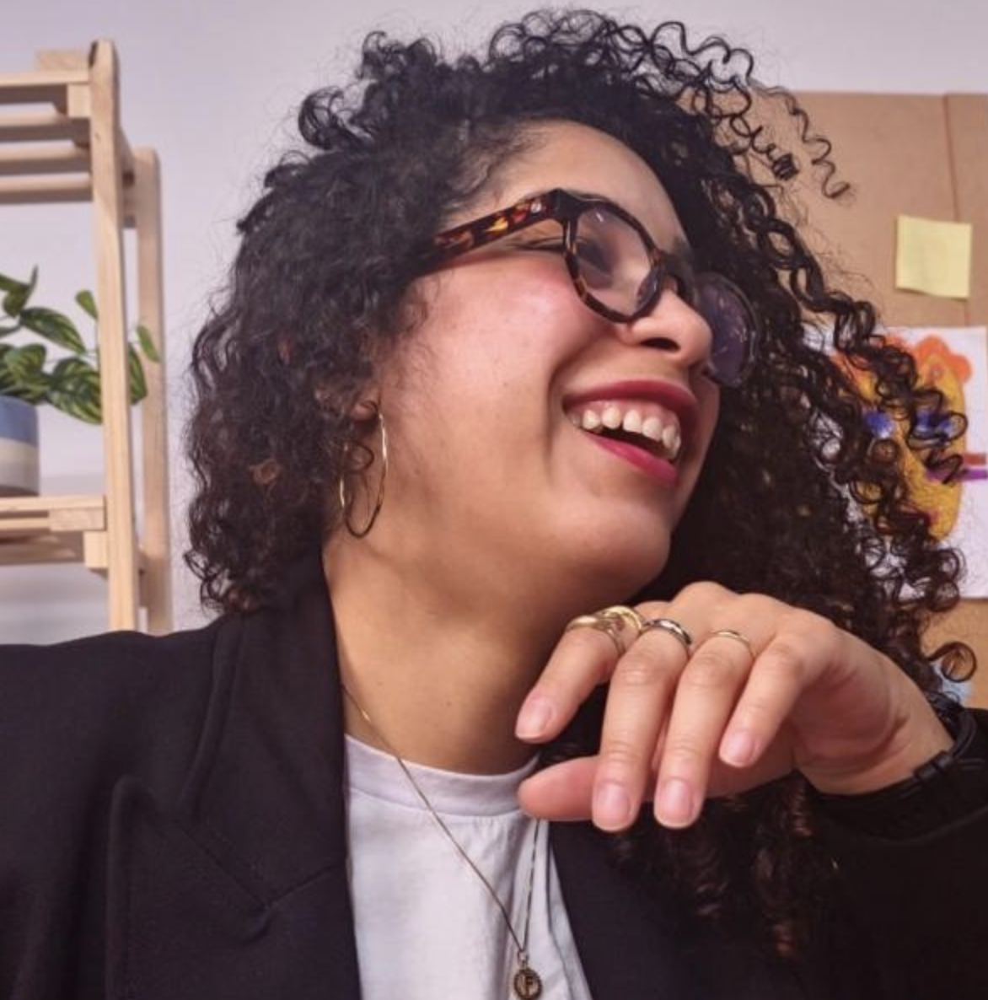
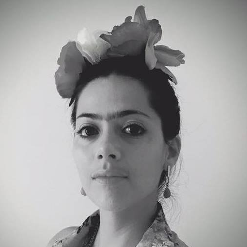
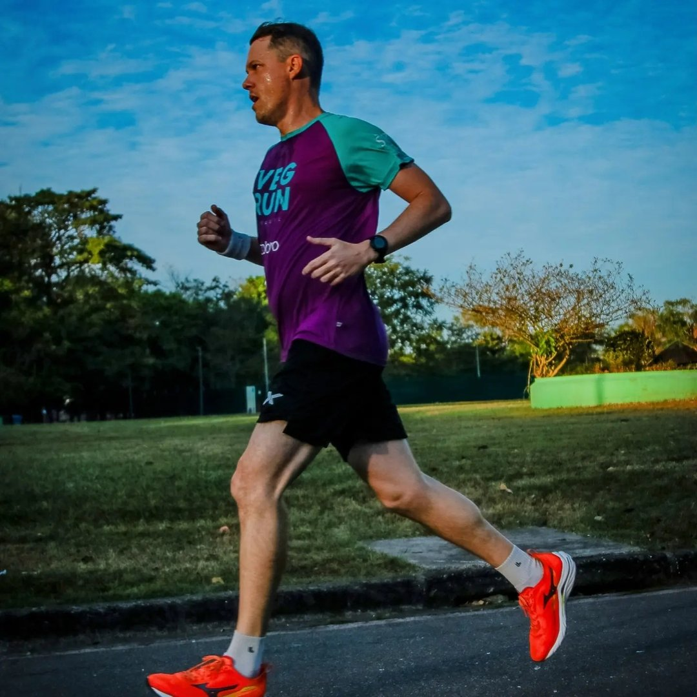
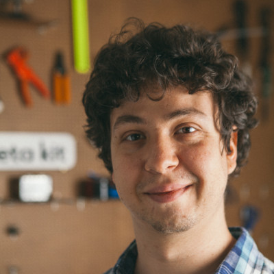

A homologação do Complemento de Computação à Base Nacional Comum Curricular — a BNCC Computação — fortaleceu o compromisso nacional com o ensino de computação em todas as etapas da Educação Básica. Desde então, estados e municípios vêm atualizando seus referenciais curriculares para incorporar competências e habilidades da área e definir caminhos para desenvolvê-las nas escolas.
As razões para ensinar e aprender computação, porém, vão além das demandas curriculares. A partir de uma perspectiva construcionista de aprendizagem, entendemos a computação como uma forma de criar, investigar e expressar ideias. Ao construir simulações, jogos, visualizações, modelos e dispositivos robóticos, os estudantes podem mobilizar conhecimentos de diferentes áreas, testar hipóteses e produzir suas próprias representações do mundo.
O CLIC é uma iniciativa do Transformative Learning Technologies Lab voltada à integração da computação com diferentes componentes curriculares da Educação Básica.
Ancorado nas habilidades da BNCC Computação e em princípios construcionistas de aprendizagem, o projeto promove o codesenho de ferramentas e sequências didáticas interdisciplinares, além de apoiar professores na adaptação e implementação dessas propostas em sala de aula.
Priorizamos uma abordagem interdisciplinar por duas razões principais. Primeiro, porque a computação pode ampliar e ressignificar a aprendizagem de conhecimentos já presentes no currículo, da Matemática às Ciências Humanas. Segundo, porque acreditamos que sua integração às diferentes áreas do conhecimento pode contribuir para uma implementação mais viável, significativa e sustentável da BNCC Computação.
O CLIC atua em três frentes principais.
Em sessões de ideação, planejamento e experimentação com professores de diferentes disciplinas, identificamos objetivos de aprendizagem para os quais a computação pode ampliar as possibilidades de investigação, construção e expressão do conhecimento.
As sequências desenvolvidas articulam habilidades da BNCC Computação a conhecimentos de outros componentes curriculares e são continuamente aprimoradas a partir das experiências de professores e estudantes.
Conheça alguns exemplos na página Unidades.
O codesenho das sequências didáticas também nos ajuda a identificar demandas por ferramentas que facilitem a integração entre computação e outras áreas do conhecimento.
Além de selecionar e adaptar tecnologias já existentes, desenvolvemos ferramentas sob medida em diálogo com os professores participantes e com as realidades de suas salas de aula.
O processo de codesenho faz parte de um percurso formativo sobre computação interdisciplinar. Nesse percurso, buscamos construir uma linguagem comum sobre o que é a computação, como ela pode se relacionar com diferentes componentes curriculares e quais possibilidades oferece para a aprendizagem dos estudantes.
A formação combina momentos de exploração de ferramentas, planejamento colaborativo, produção de materiais, experimentação em sala de aula e reflexão sobre as práticas desenvolvidas. Esse percurso vem sendo aprimorado ao longo dos anos e já contou com a participação de dezenas de educadores.
As primeiras implementações do CLIC em sala de aula ocorreram em 2023, por meio de uma colaboração com a Secretaria Municipal da Educação de Sobral, no Ceará, e com o apoio da Limmat Foundation.
Desde então, o projeto vem ampliando suas áreas de atuação, seus materiais e suas parcerias. Professores de diferentes territórios já utilizaram recursos desenvolvidos pelo CLIC para promover experiências interdisciplinares de aprendizagem em computação.

Imagem 1
Imagem 2O CLIC é desenvolvido pelo Transformative Learning Technologies Lab, da Universidade Columbia.
O TLTL tem como missão tornar o aprendizado em STEM mais conectado às paixões e aos interesses intelectuais dos alunos, à cultura deles e aos saberes locais sobre como construir e fabricar coisas.





O CLIC é baseado em três perspectivas para integração da computação aos componentes curriculares.
Para a integração de tecnologias computacionais, em que o aprendizado de computação é fomentado a partir da construção de artefatos computacionais (ex.: chatbots, visualizações dinâmicas, sistemas robóticos) que apoiam os estudantes a refletir sobre o que e como aprendem ideias centrais da computação e dos componentes curriculares.
Onde o principal objetivo para o aprendizado de computação é levar estudantes e professores a ampliarem suas capacidades de ler e escrever num mundo cada vez mais permeado por tecnologias computacionais.
Blikstein & Moghadam, 2018 · diSessa, 2000 · Kafai & Proctor, 2022
Trazendo uma visão contextualizada dos conceitos e práticas da computação nas demais áreas do conhecimento, ancoradas em habilidades específicas de cada campo conforme proposto pela Base Nacional Comum Curricular (BNCC).
19th International Conference of the Learning Sciences — ICLS 2025.
Eloy, A., Rabinovitch, N., Goya, W. A., & Blikstein, P. (2025). In Rajala, A., Cortez, A., Hofmann, R., Jornet, A., Lotz-Sisitka, H., & Markauskaite, L. (Eds.), Proceedings of the 19th International Conference of the Learning Sciences — ICLS 2025 (pp. 628–636). International Society of the Learning Sciences.
57th ACM Technical Symposium on Computer Science Education (SIGCSE TS 2026).
Proceedings of Constructionism / FabLearn 2023.